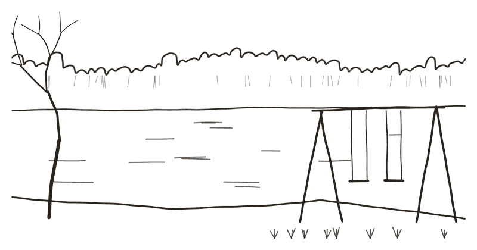

Bradley Park
Jasper · easiest with little ones
The Little Buffalo runs through town here, with wading areas and a spot for swimming. There's a playground beside it, and it's close to lunch on the square.
There are pickleball courts too, if you packed paddles.